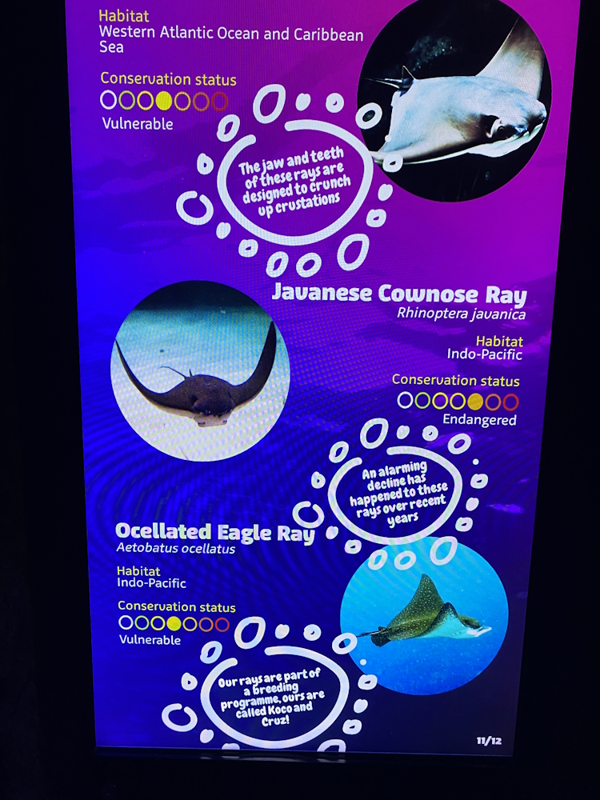
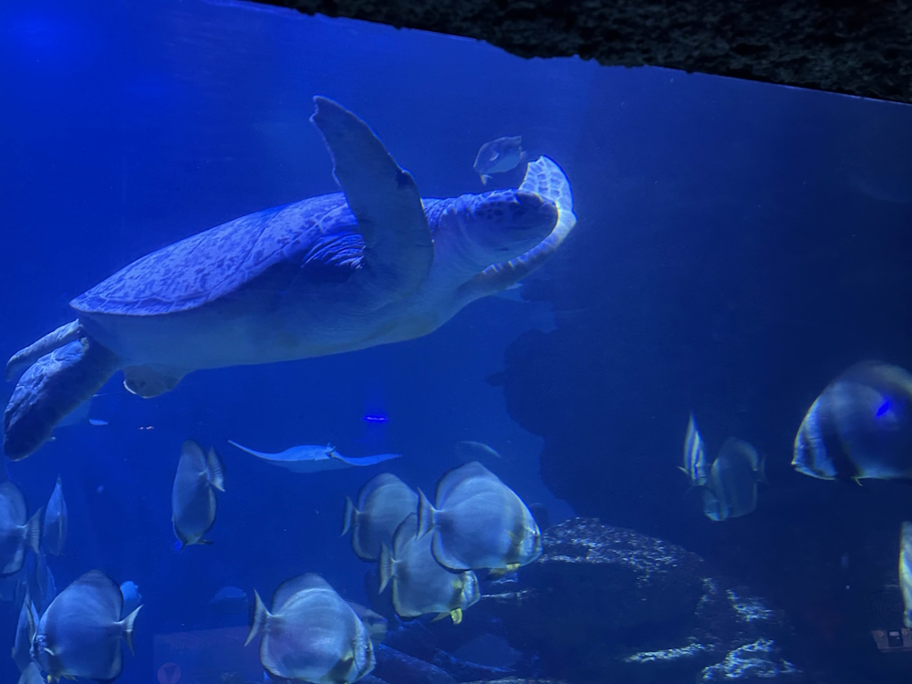
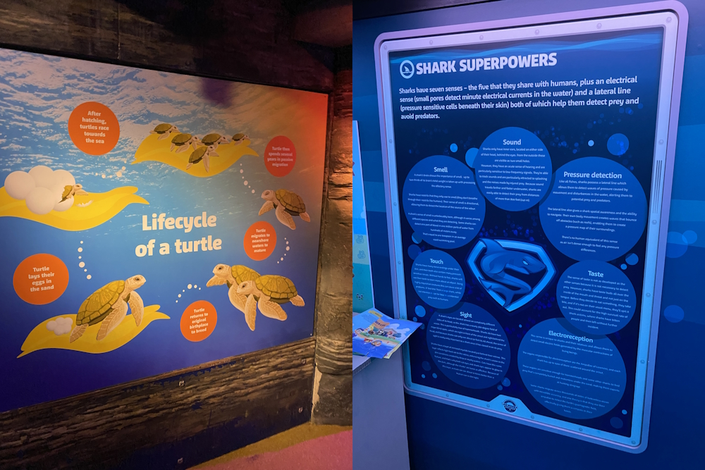
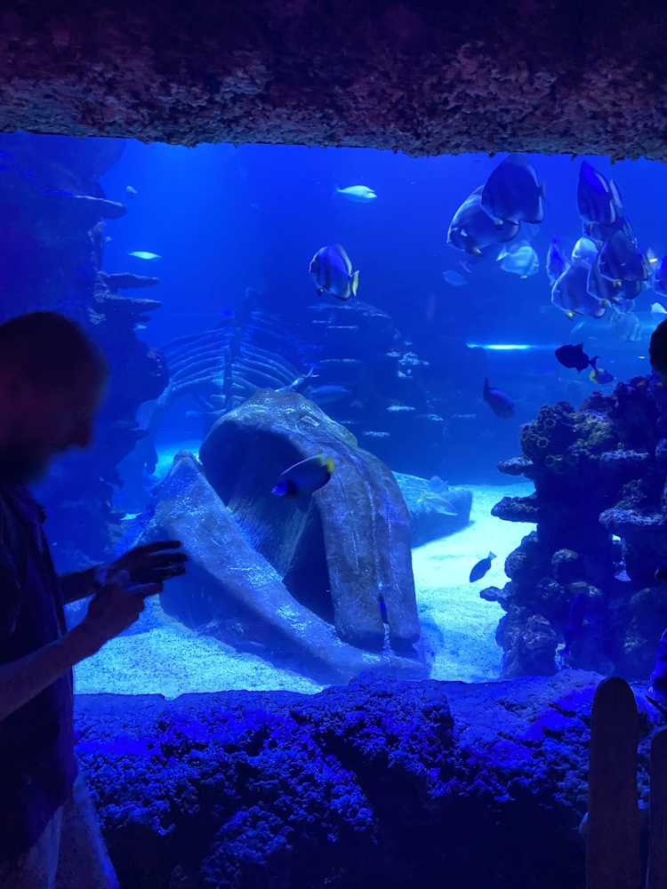
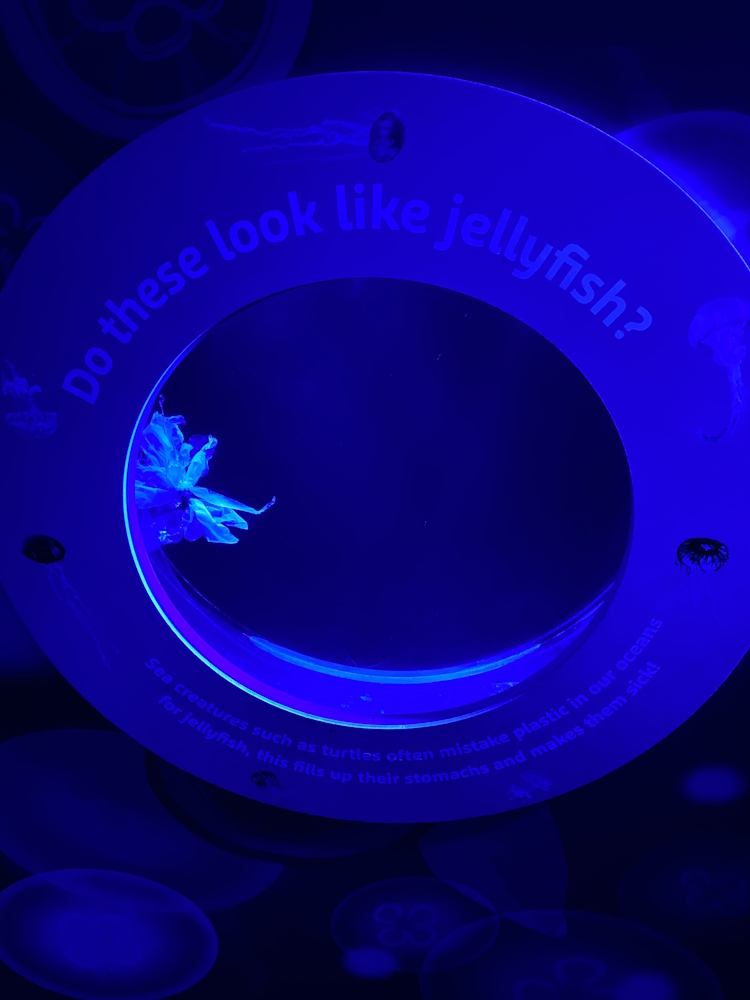
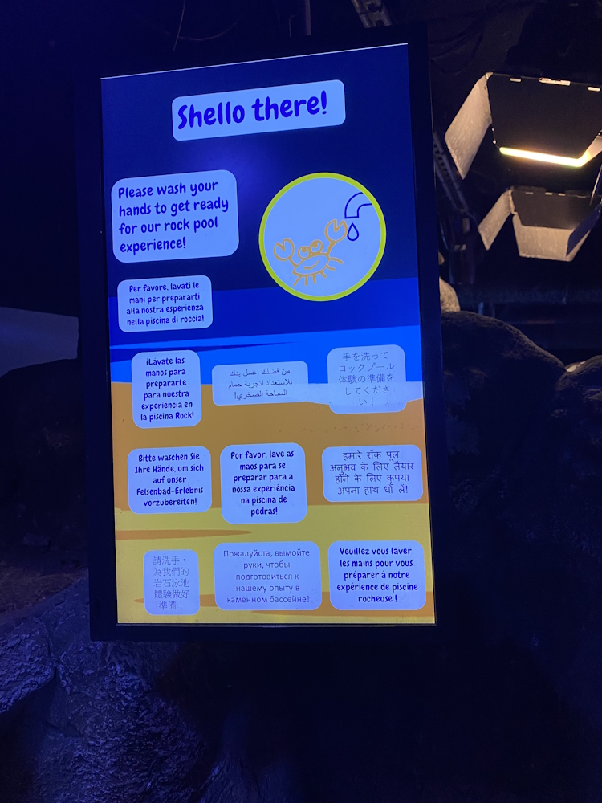
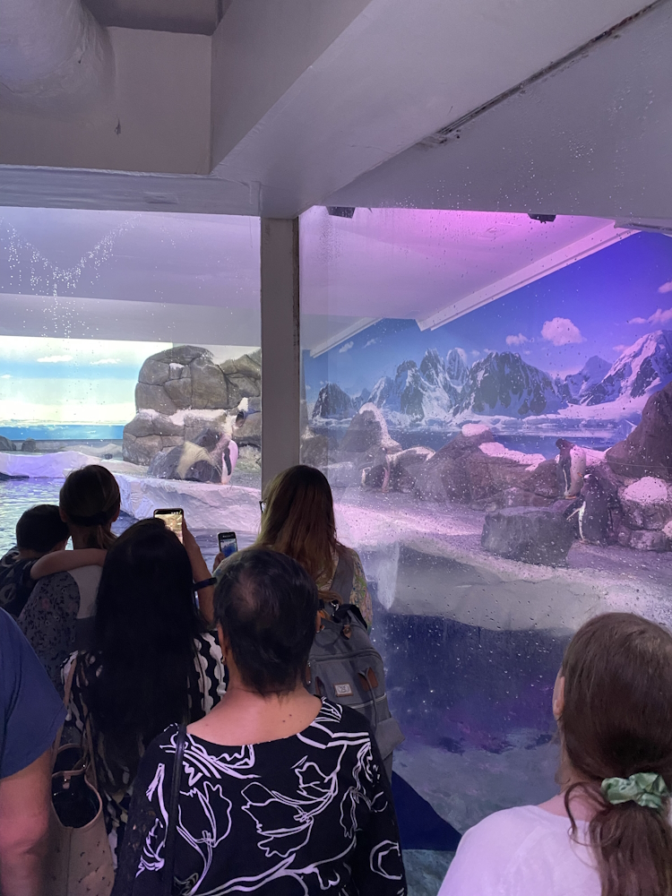
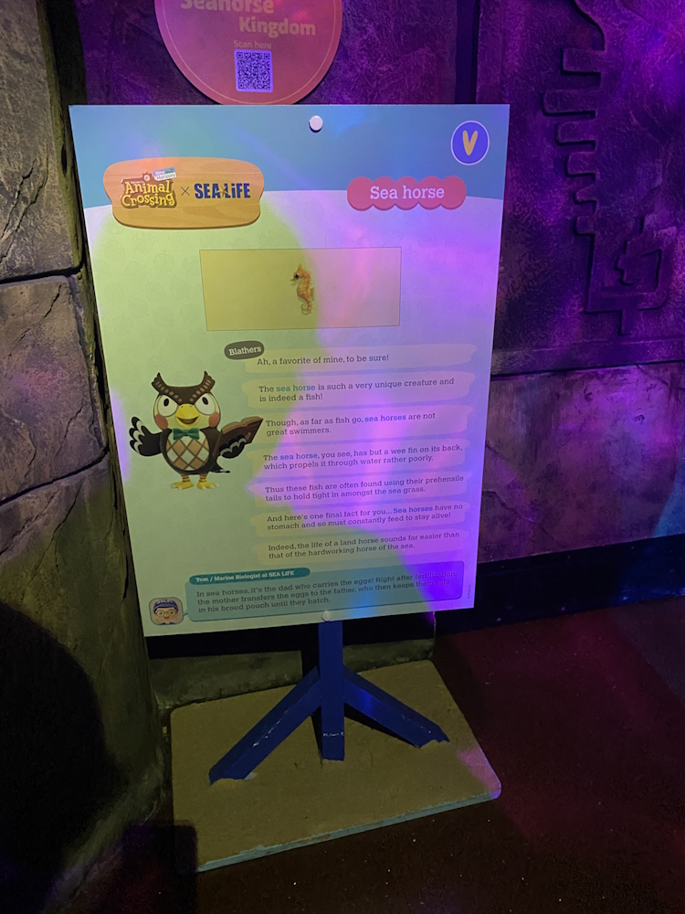
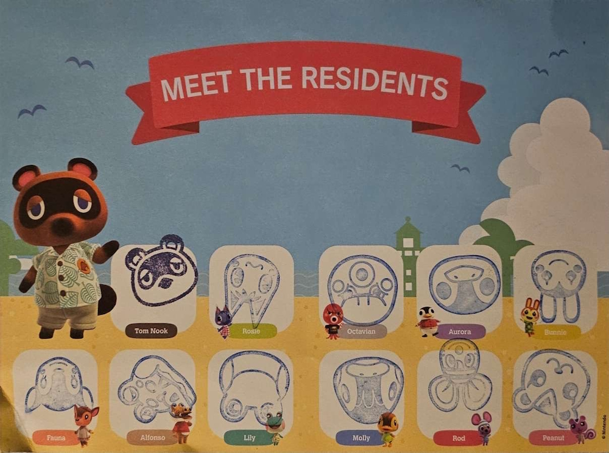

I had to wait for quite some time to view this page so I could identify a ray in this exhibit.

Late last month, some friends and I visited the Sea Life London Aquarium while the Animal Crossing: New Horizons event was on. For those of you who do not know, Animal Crossing: New Horizons is a video game developed by Nintendo, in which you live on a deserted island with several animal residents. Throughout the game, you can catch various bugs, fish, and other sea creatures and donate them to the island museum, where you can find out more information about them. In this post, I will talk about this event, but before that, I would like to talk about what I liked (and didn’t like) about this aquarium.
First of all, one of the things that stuck out to me most was the amount of interactive or otherwise engaging features. From a leafcutter ant tube, to a ‘rainforest research camp’, to a game simulating the different factors that affect jellyfish survival, the aquarium was full of different activities and features that were both fun and educational. Speaking of education, the overwhelming majority of the signage at the aquarium was formatted clearly, and had just the right amount of information - they taught you something without losing your attention halfway through. The signs for the different species on display were electronic, which I imagine would make it easier to make updates on things like IUCN Red List status and new additions to exhibits. However, for larger exhibits, there were upwards of 10 pages of species which the display would automatically cycle through. To find information about one animal in particular, you had to wait until it showed the page you wanted. I think that, at least for the enclosures with a big variety of species, larger screens would be better for visitors.

I had to wait for quite some time to view this page so I could identify a ray in this exhibit.
A lot of the signs made extensive use of images to supplement the textual information on them. For example, two signs showing the life cycles of turtles and jellyfish had images for each short piece of text. Unfortunately, there were a few signs, especially towards the end of the aquarium, where the text was just too much, and also too small. This could be an issue for people with visual impairments or other learning difficulties such as dyslexia. Regardless of this, it also makes the sign unappealing to visitors, and I have to say I did not see anybody stop to read any of them.

The sign on the left is much easier to read as the information is split up into small chunks and supplemented with images. The sign on the right, however, is very overcrowded with text.
The aquarium was divided into several zones, which each had a distinct look. I thought this was a great way to make the experience more immersive, and therefore engaging. Something that was very striking to me was right at the beginning, in the Open Oceans zone, there was a very large exhibit decorated with a whale skeleton, mimicking a whale fall. This is a marine phenomenon whereby the body of a deceased whale falls to the bottom of the ocean and becomes the basis for an entire ecosystem in the otherwise unsuitable deep sea[7]. Apart from being a generally interesting and cool design choice, this also passively teaches visitors about ecology, and about how death is not inherently a bad thing and sometimes necessary for an ecosystem to flourish.

This 'whale skeleton' was a very interesting addition to this exhibit.
Something I liked a lot about this aquarium was how constant the conservation information and messaging was. There were snippets of information throughout about plastic pollution, climate change, et cetera, as well as about the things that Sea Life does to help protect marine wildlife, and changes that visitors can make to their lifestyles (including buying habits and behaviour around wildlife) to help as well. These bits of information could be found on standalone signs, attached to information about habitats, and on just about every bin in the entire attraction. Something that particularly caught my friends' and my eye was a tank in the jellyfish section that only had a plastic bag in it. This was to show how sea turtles can mistake plastic pollution for jellyfish and ingest it. My friend thought that this would help people to empathise with marine life, and potentially make a change to their lifestyle to help reduce plastic waste.

Although it is simple, I thought this was a very powerful display. It reminded me of the old 'Siamese crocodile' exhibit at ZSL London Zoo which displayed a seized crocodile skin bag.
Overall, accessibility was generally quite good at Sea Life London. Although the attraction had three floors, there were lifts available as well as stairs, and the entire area was wheelchair accessible. As well as this, according to the website, there are monthly ‘quiet at the aquarium’ events for visitors with different sensory requirements. The website also has clear information about exactly what to expect upon arriving in terms of security checks, et cetera, which is very helpful for neurodivergent people, such as those with ASD (autism spectrum disorder). Most of the attraction is dimly lit for the sake of the animals on display, but this might be an issue for people with visual impairments. As well as this, there are very few areas to rest, something that people with mobility issues or pregnant people may have to keep in mind when visiting. However, Sea Life does allow people to bring carers with a free carer ticket, as long as you can provide appropriate documentation to prove that it is needed.
In general, I thought a lot of things at Sea Life London were very good, both for visitors and for the animals. However, something I did not entirely support was the touch tank in the Rockpool Zone. Though I did not get a proper look (it was very busy that day), the Sea Life website says that here, you are able to “stroke a starfish”[6]. Frustratingly, the jury is still out on whether or not this could negatively affect the welfare of invertebrates – fish and invertebrate welfare are relatively recent fields in the world of animal research[3]. Additionally, the only invertebrates protected under the Animal Welfare (Sentience) Act 2022 are cephalopods (squid, octopuses, et cetera) and decapods (crabs, lobsters, etc.). Because of this, it is difficult to come to a conclusion as to whether or not touch tanks are suitable. In my personal opinion, however, it should be treated as ‘guilty until proven innocent’, that is, until we have evidence that it does not negatively affect the animals, they should not be used. Ironically, a sign about responsible rockpooling displayed behind the touch tank read: “Try to study rather than touch to preserve the creature’s habitat and comfort”. While I do believe tactile sources of information are effective and important for a number of reasons, I also think that there are other ways it can be achieved, such as with non-living biological specimens like shells (which I think were also available in the touch tank), and sculptures (which are already common in many zoos in the form of simulations of crocodile skin or tortoise shells, et cetera).

Though I do not agree with the touch pool as a whole, Sea Life were responsible in making sure that it is staffed and hygienic.

Though completely indoors, this penguin enclosure has multiple sections with varied terrain, water availability, and enrichment toys.
An advantage of the penguins’ completely indoor enclosure is that this makes it easier to keep the area cool, which is important as Gentoo penguins are an Antarctic/Sub-Antarctic species adapted to the cold, and would not feel comfortable in a warmer climate[4]. The AZA penguin taxonomic advisory group (TAG) recommend an air temperature of between -4.5° and 7° Celsius, and while I did not have a thermometer to hand, I felt that the temperature of this area fell within this range[2]. In fact, I now realise that my original feelings towards this exhibit were probably because I was so used to enclosures for other penguin species, such as Humboldt penguins (Spheniscus humboldtii), which can be kept outside in the UK comfortably[2]. Thinking about it, many species are kept inside exclusively with no health or behavioural detriment, such as reptiles, amphibians, and invertebrates. This allows full climate control in their enclosure, which, like for the Gentoo penguins at Sea Life, ensures that they are comfortable and healthy.
The Animal Crossing: New Horizons event was ongoing throughout the summer in different Sea Life aquariums across the country. It consisted of some themed signs around the aquarium that spoke about different species in the style of the game’s museum curator, called Blathers. Each of these signs had a letter on them that you could record on a sheet and unscramble to spell the word ‘conservation’. As well as this, there was a stamp sheet to fill in with stamps of some different characters from the game, which you could find in different areas of the aquarium. Finally, there was an opportunity to get a photo with a mascot of either Tom Nook or Isabelle, two more characters from the game.

This sign has clear information split up into manageable chunks, and is attractive to fans of the Animal Crossing games.
I thought that the signage was a good idea. The information was laid out very clearly, and I felt the style of it would have attracted fans of the game more than generic signs. However, the letter-puzzle-scavenger-hunt part seemed a bit pointless to me. There was no real incentive for it, apart from the feeling of completion. On the other hand, however, it could have led people to actively seek out the signs, potentially leading to more people actually reading them. The stamp sheet also did not really have a point apart from having a full stamp sheet. At first, I thought that the different stamp stations could cause people to stay in certain areas for longer and maybe notice more about them. From my experience, however, all it led to was waiting in a queue to use the stamps while not really seeing much else - most of the stations were not strategically placed in such a way that people waiting to use them could still see important signs, exhibits, et cetera.

Our completed stamp sheet. We accidentally stamped the first one upside down, then proceeded to stamp the rest of them upside down on purpose for consistency.
Overall, I did enjoy Sea Life London for the most part. My friends and I were interested throughout, and I saw a lot of the other visitors were as well. The education and conservation messaging were, as a whole, extremely thorough, and the visual design of everything was very engaging. The Animal Crossing: New Horizons event was a fun little addition to the day, but nothing more than that, in my opinion. But, if it brought more people to the aquarium, then that means more people potentially learned something about our oceans and how to protect them.
[1] Adkesson, M. J. and Langan, J. N. 2007. Metabolic bone disease in juvenile Humboldt penguins (Spheniscus humboldtii): investigation of ionized calcium, parathyroid hormone, and vitamin D3 as diagnostic parameters. Journal of Zoo and Wildlife Medicine, 38, pp. 85-92. Available at: https://doi.org/10.1638/06-004.1 (Accessed: 27/07/2025)
[2] AZA Penguin TAG. 2014. Penguin (Spheniscidae) Care Manual. Silver Spring, MD: Association of Zoos and Aquariums. Available at: https://assets.speakcdn.com/assets/2332/penguin_care_manual_aza_final_2014.pdf (Accessed: 27/07/2025)
[3] Biasetti, P., Florio, D., Gili, C. and de Mori, B. 2020. The Ethical Assessment of Touch Pools in Aquariums by Means of the Ethical Matrix. Journal of Agricultural and Environmental Ethics, 33. Pp. 337-353. Available at: https://doi.org/10.1007/s10806-020-09823-2 (Accessed: 31/07/2025)
[4] BirdLife International, 2020. Pygoscelis papua. The IUCN Red List of Threatened Species 2020: e.T22697755A157664581. Available at: https://dx.doi.org/10.2305/IUCN.UK.2020-3.RLTS.T22697755A157664581.en (Accessed: 01/08/2025)
[5] Hrabia, A., Kamińska, K., Socha, M. and Grzesiak, M. 2023. Vitamin D3 Receptors and Metabolic Enzymes in Hen Reproductive Tissues. International Journal of Molecular Sciences, 24(23). Available at: https://doi.org/10.3390/ijms242317074 (Accessed: 31/07/2025)
[6] Sea Life. No date. Is SEA LIFE London Aquarium suitable for children? [online]. Available at: https://london-support.visitsealife.com/hc/en-us/articles/212497509-Is-SEA-LIFE-London-Aquarium-suitable-for-children (Accessed: 31/07/2025)
[7] Smith, C. R., Glover, A. G., Treude, T., Higgs, N. D. and Amon, D. J. 2014. Whale-Fall Ecosystems: Recent Insights into Ecology, Paleoecology, and Evolution. Annual Review of Marine Science, 7, pp. 571-596. Available at: https://doi.org/10.1146/annurev-marine-010213-135144 (Accessed: 27/07/2025)
[8] Tröndle, U., Steinmetz, H. W., Rüegg, S. R., Müller, A. and Liesegang, A. 2018. UV-light and dietary vitamin D and their effects on ionized calcium and 25-OH-D plasma concentrations in captive gentoo penguins (Pygoscelis papua). Journal of Animal Physiology and Animal Nutrition, 102(5), pp. 1419-1428. Available at: https://doi.org/10.1111/jpn.12941 (Accessed: 27/07/2025)

Hi! I'm Robbie, a semi-recent graduate of animal science from Anglia Ruskin University. My main goal professionally is to enter the world of zookeeping (don't ask how that's going so far), and this website is my way of keeping my brain occupied with zoo-related topics in the meantime.
Until about 6 months before starting university, my plan was to study linguistics. I thought it would be better to keep my professional life separate from my hobbies though, and decided to study animals and conservation very last-minute (which surprised basically everybody who knew me).
As well as my ability to make impulsive decisions that impact the rest of my life, I also have quite a few hobbies and skills (I'm a very indecisive person), including very basic web design. This site was essentially born from two of my most different interests.
Thank you for visiting, I hope you find something you like here!